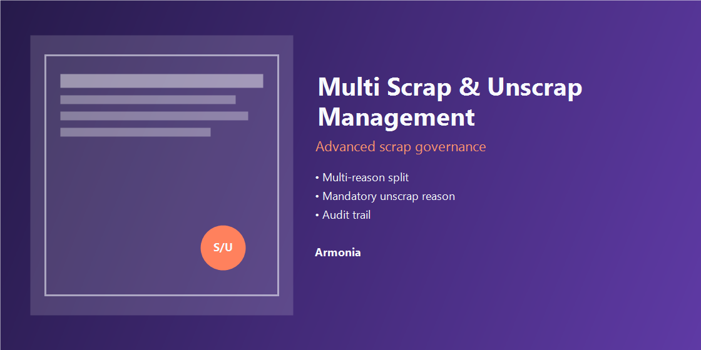

Multi Scrap & Unscrap Management
Advanced scrap governance for Odoo Inventory and Manufacturing.
Odoo 18
Inventory
Manufacturing
Armonia

Business Value
Standardize scrap and reversal operations with traceability, governance, and operator-friendly screens.
Core Features
- Scrap Categories and Scrap Reasons setup from Inventory Configuration.
- Each reason linked to one category for clean governance.
- Single-reason and multi-reason scrap in one operational form.
- Category-based reason loading for fast entry.
- Split one scrap into multiple reasons with strict quantity validation.
- Unscrap wizard with mandatory Reason and full traceability.
- Partial/full reversals with audit history.
- Unified list columns for Reason, Scrap Category, Quantity and Status.
Configuration & Workflow
- Inventory > Configuration > Scrap Configuration.
- Create Scrap Categories, then Scrap Reasons.
- Run scrap simple or multi-reason split in the same form.
- Use Unscrap wizard on done records with required Reason.
Support
- Support email: le.contino@gmail.com
- Compatible edition: Odoo 18 (this package)
- Also available: Odoo 19 edition
Screenshots - Scrap Setup


Screenshots - Scrap Operations


Screenshots - Unscrap